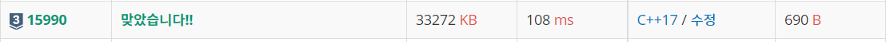

#INFO
난이도 : SIVLER3
알고리즘 유형 : DP(다이나믹 프로그래밍)
출처 : https://www.acmicpc.net/problem/15990
15990번: 1, 2, 3 더하기 5
각 테스트 케이스마다, n을 1, 2, 3의 합으로 나타내는 방법의 수를 1,000,000,009로 나눈 나머지를 출력한다.
www.acmicpc.net
#SOLVE
전에 정리했던 9095 DP 문제에서 "1,2,3이 연속해서 나오면 안된다."는 조건이 추가되었다. 마찬가지로 마지막에 나오는 수에 집중하면 된다.
DP[n][i] = 숫자 n을 1, 2, 3의 합으로 나타내는 방법의 수 , i = 마지막 수 라고 가정한다. ( 1 <= i <= 3)
DP[n][1] = DP[n-1][2] + DP[n-1][3]
DP[n][2] = DP[n-2][1] + DP[n-2][3]
DP[n][3] = DP[n-3][1] + DP[n-3][2]
와 같이 나타낼 수 있다. 왜냐하면 만약 마지막의 수가 1이라면, 앞에 나오는 수는 1이 될 수 었으니, 2 혹은 3이 나와야 하기 때문이다.
따라서, n을 1, 2, 3의 합으로 만들 수 있는 방법의 가짓수는 DP[n][1] + DP[n][2] + DP[n][3] 이다.
#CODE
#include <iostream>
using namespace std;
long long dp[1000001][4];
const long long mod = 1000000009L;
const int limit = 100000;
int main(){
// DP SOLVE
for (int i=1; i<=limit; i++){
if (i-1 >= 0){
dp[i][1] = dp[i-1][2] + dp[i-1][3];
if (i == 1){
dp[i][1] = 1;
}
}
if (i-2 >= 0){
dp[i][2] = dp[i-2][1] + dp[i-2][3];
if (i == 2){
dp[i][2] = 1;
}
}
if (i-3 >= 0){
dp[i][3] = dp[i-3][1] + dp[i-3][2];
if (i == 3){
dp[i][3] = 1;
}
}
dp[i][1] %= mod;
dp[i][2] %= mod;
dp[i][3] %= mod;
}
//PRINT
int t;
cin >> t;
while(t--){
int n;
cin >> n;
cout << (dp[n][1] + dp[n][2] + dp[n][3]) % mod << "\n";
}